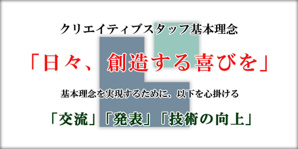
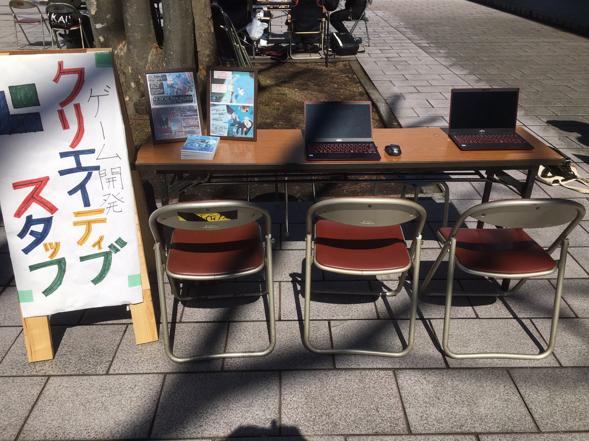
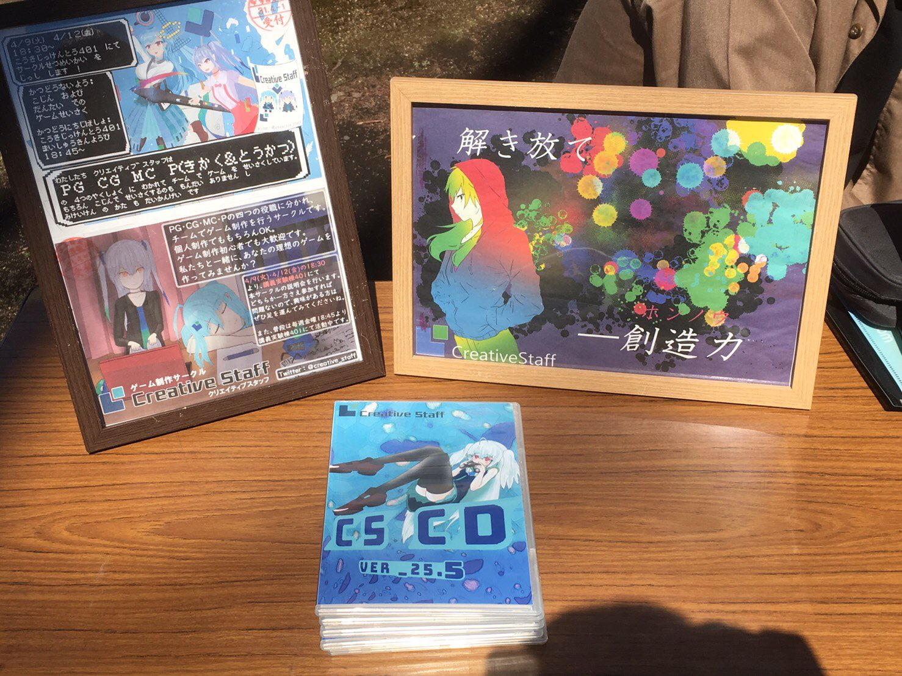
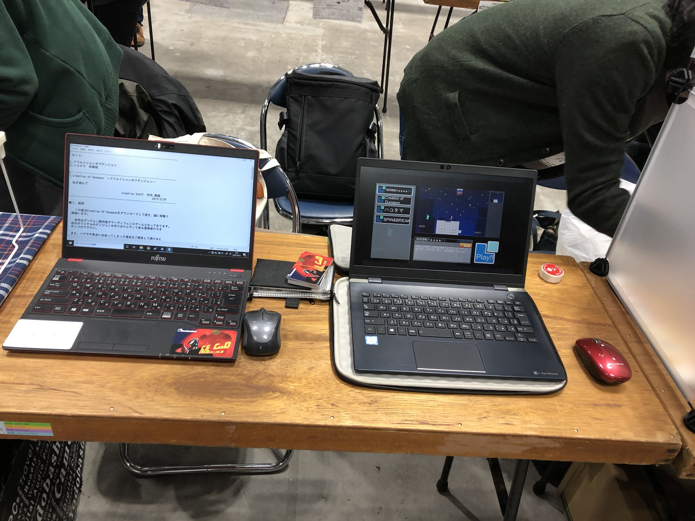

クリエイティブスタッフについて
クリエイティブスタッフは、東京工科大学所属の文化系公認サークルです。
マルチメディアコンテンツの制作を通して技能の向上を目指し、ゲームプログラミングを中心とした創作活動を行っています。
基本理念
活動概要
主な活動内容は、プログラミング、グラフィック、音楽、プロデューシングです。
入部したばかりの方に活動に必要な知識や技術を身につけていただくため、前期は先輩による講習が活動の中心になります。
月曜日から木曜日の放課後にPG(プログラミング)講習、CG(コンピュータグラフィックス)講習、MC(音楽)講習、P(プロデューシング)講習をそれぞれ行います。
各講習ではゲーム制作における基礎を教えますが、PG講習は基礎と応用の二つに分け、どちらかを自由に選んでいただく形となります。
月に二回ほど金曜日に全体会議を行い、年に四回ほど個人制作向けの作品発表会を行います。
基本的にサークルでは企画を立ち上げ、そこに参加する形でゲーム制作を行っていき、制作した物を全体会議にて発表します。
夏休み以降は、大学の文化祭である秋の紅華祭や、春の新入生歓迎会を目標に作品の制作に取り組みます。
最近は、イベントや展示会に向けた作品の制作も行っており、コンテストに作品を出すなどの活動もしています。また、資格の取得を支援する為の講習会なども行われています。
 
▲2019年度新入生歓迎会にて

▲コミックマーケット97（2019年12月）にて
入部希望の方へ
東京工科大学の学生であれば、誰でも入部可能です。
初心者の方も歓迎です！講習などで、技術の取得をサポートいたします。
また、新歓時期以外の入部や、2年生以上の入部も歓迎します！
入部希望の方は、下記の連絡先までご連絡下さい。
連絡先
✉ creative.staff.tut + gmail.com※ + を @ に変えて下さい。